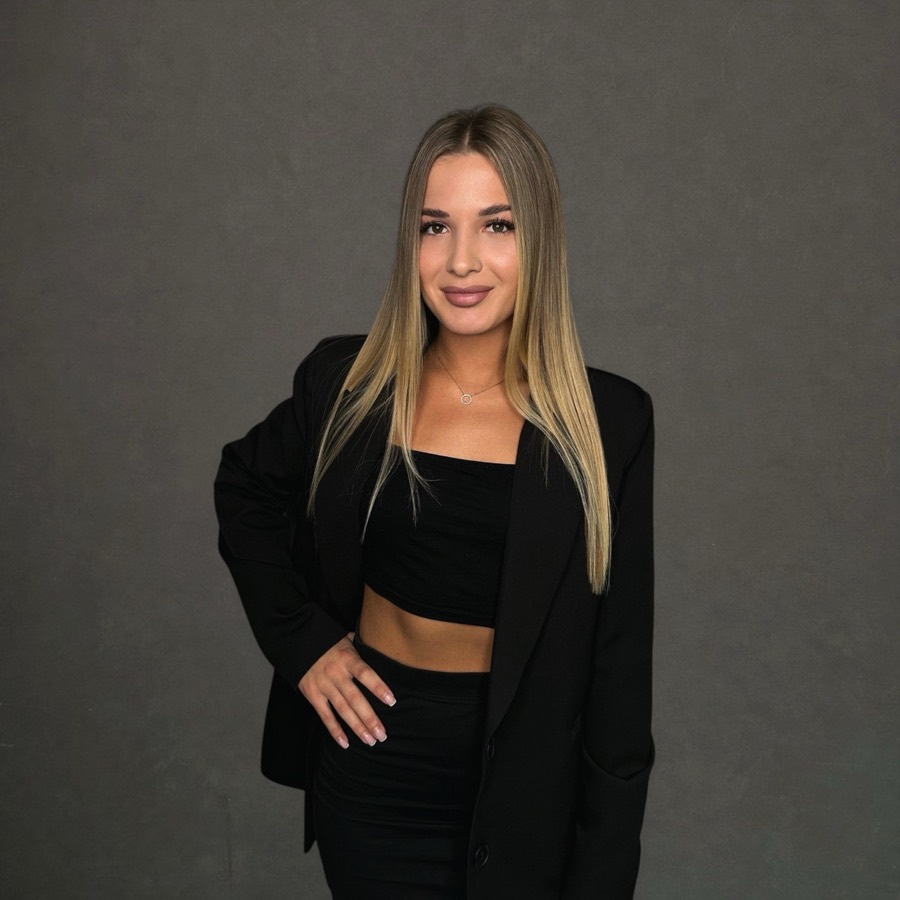
Яна Бондаренко
технолог · с 2020 года
Эксперт по домашнему уходу. Диагностика и пилинг кожи головы, полировка.
Горячие процедуры делают волосы прямыми и гладкими. Холодные восстанавливают их качество. Нажмите на прядь — посчитаем цену под вашу длину.
Цена зависит от длины и густоты волос. Потяните линию среза на фото или ползунок — посчитаем по прайсу студии.
Перед процедурой мастер измерит длину и густоту и назовёт точную цену до начала работы. Выбор составов на цену не влияет. Свыше 70 см и наращённые волосы — по прайсу в студии.
Круглые зеркала с подсветкой, бетон и графит. В отзывах чаще всего хвалят атмосферу и кофе — по 100% на Яндекс Картах.
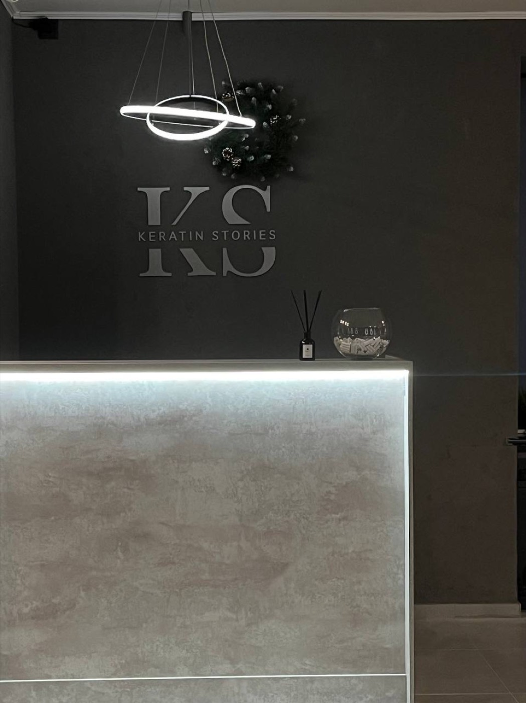
Ресепшен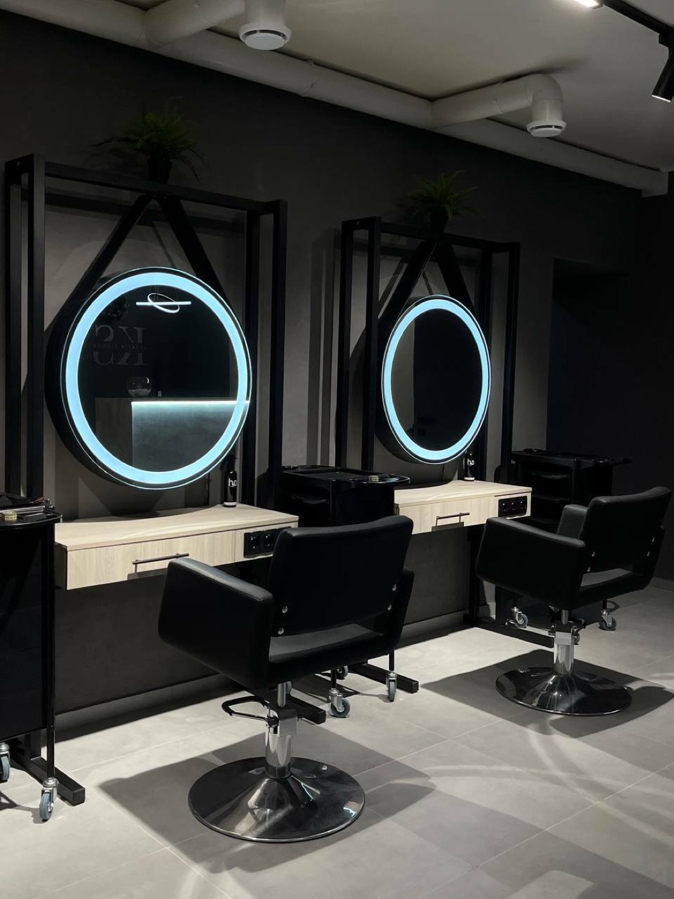
Рабочие местаАтмосфера — 100%
Кофе — 100%
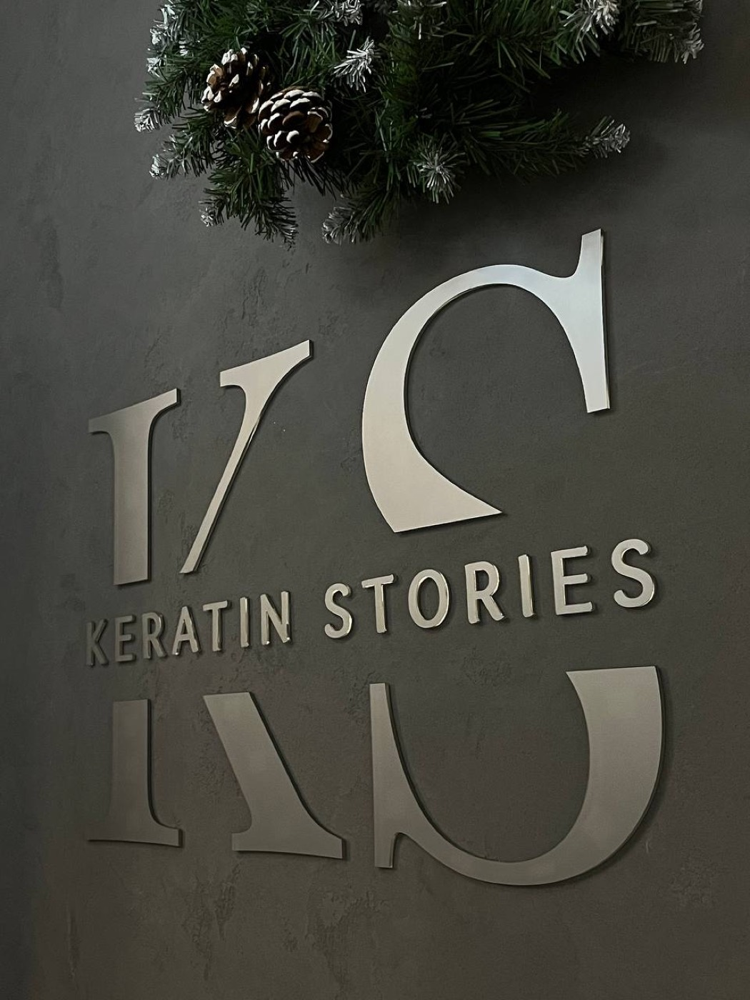
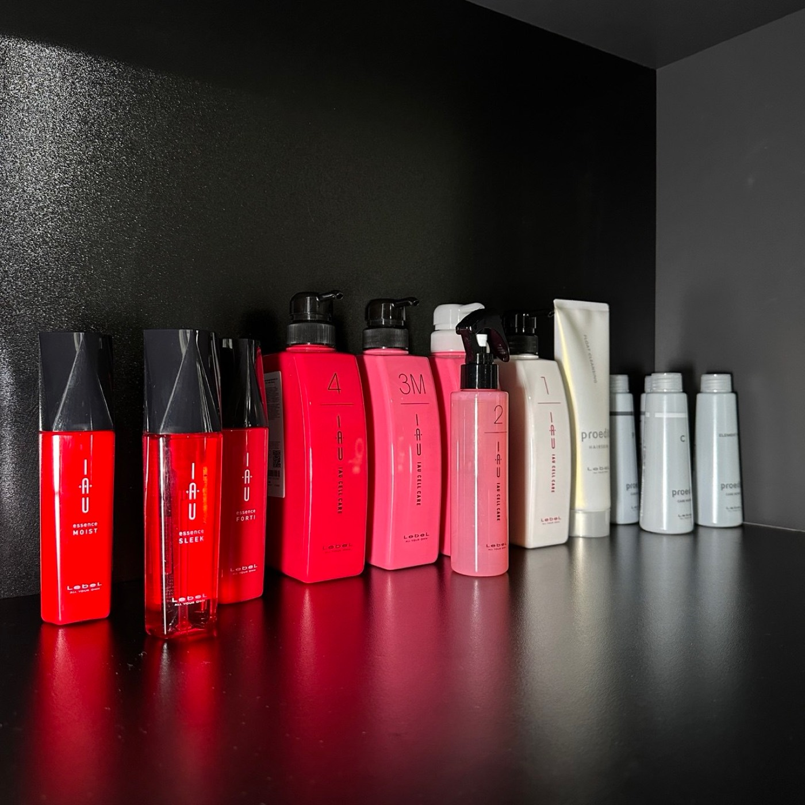
40+ составов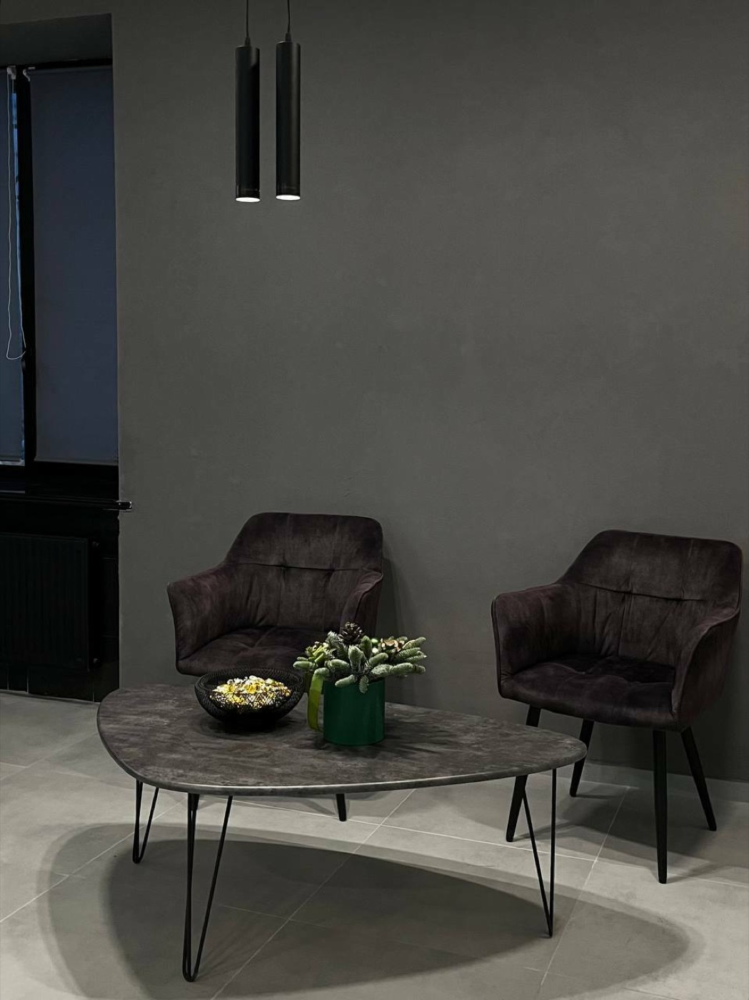
Лаунж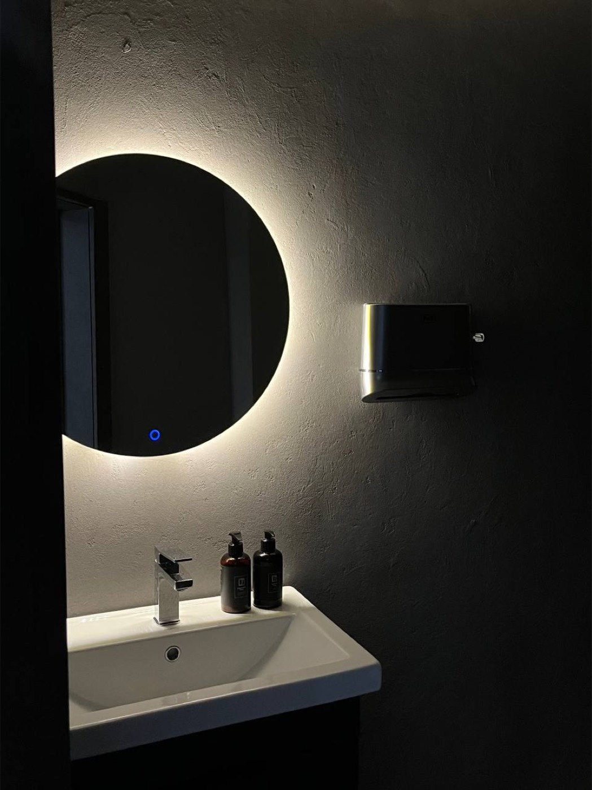
Мастер оценит состояние и структуру волос, расспросит о желаемом результате, измерит длину и густоту и назовёт точную цену — до начала работы.
Не работаем на одном бренде: в студии больше 40 составов. Если волосы осветлены или повреждены — добавим подложку, чтобы горячая процедура прошла мягче.
Мастер рассказывает о каждом этапе. Пока вы в кресле — кофе или чай со сладостями, музыка и персональный вентилятор.
После процедуры — рекомендации по домашнему уходу. Бессульфатный шампунь не обязателен: подбираете по типу кожи головы.
Если в течение месяца после горячей процедуры появилась волна или пух — напишите нам. Пригласим в студию, и если недочёт подтвердится, переделаем бесплатно.
Все мастера — трит-эксперты по реконструкции волос. Перед процедурой подробно консультируют, чтобы вы получили свой результат.
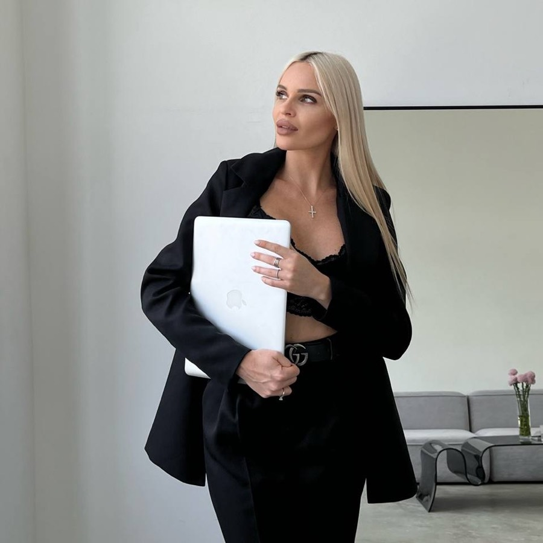
В реконструкции волос с 2016 года. В 2017-м основала проект HAIR.BOTOX.KERATIN — студию и обучение мастеров, среди учеников есть мастера из США, Италии, Чехии и Ирана.
В декабре 2023 года проект вырос в «Кератин Сторис» — просторную студию, где кератиновое выпрямление — это искусство.

Эксперт по домашнему уходу. Диагностика и пилинг кожи головы, полировка.
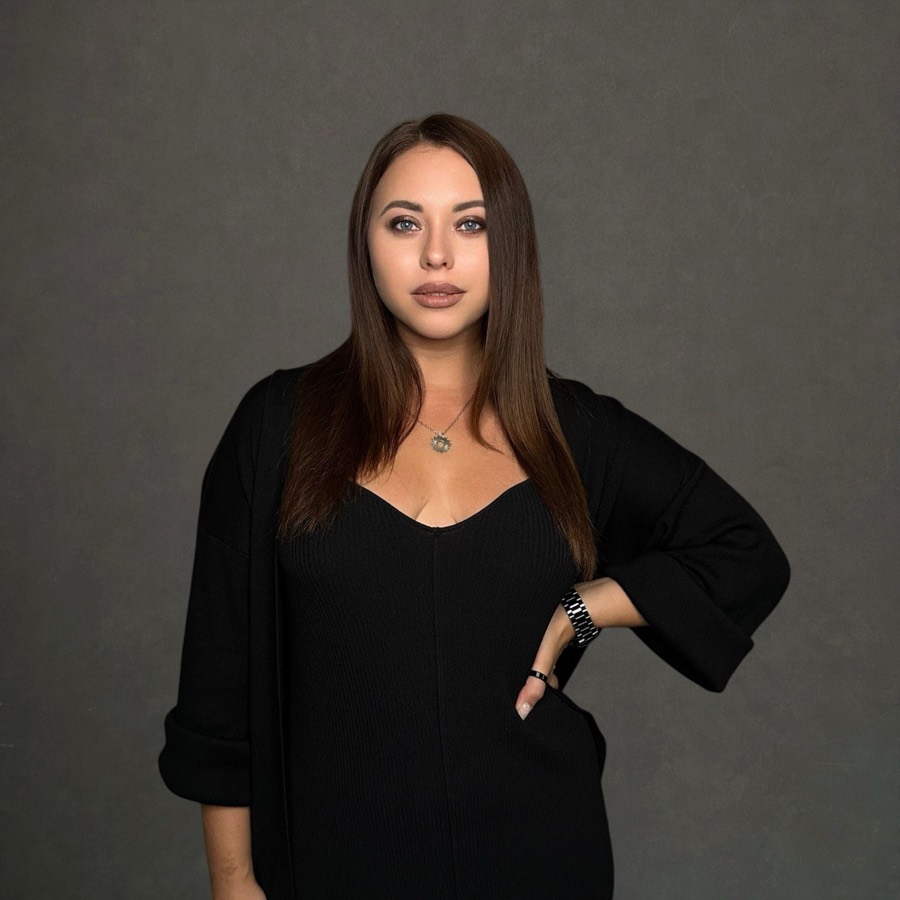
Все техники выпрямления, в том числе афро. Окрашивание и тонирование.
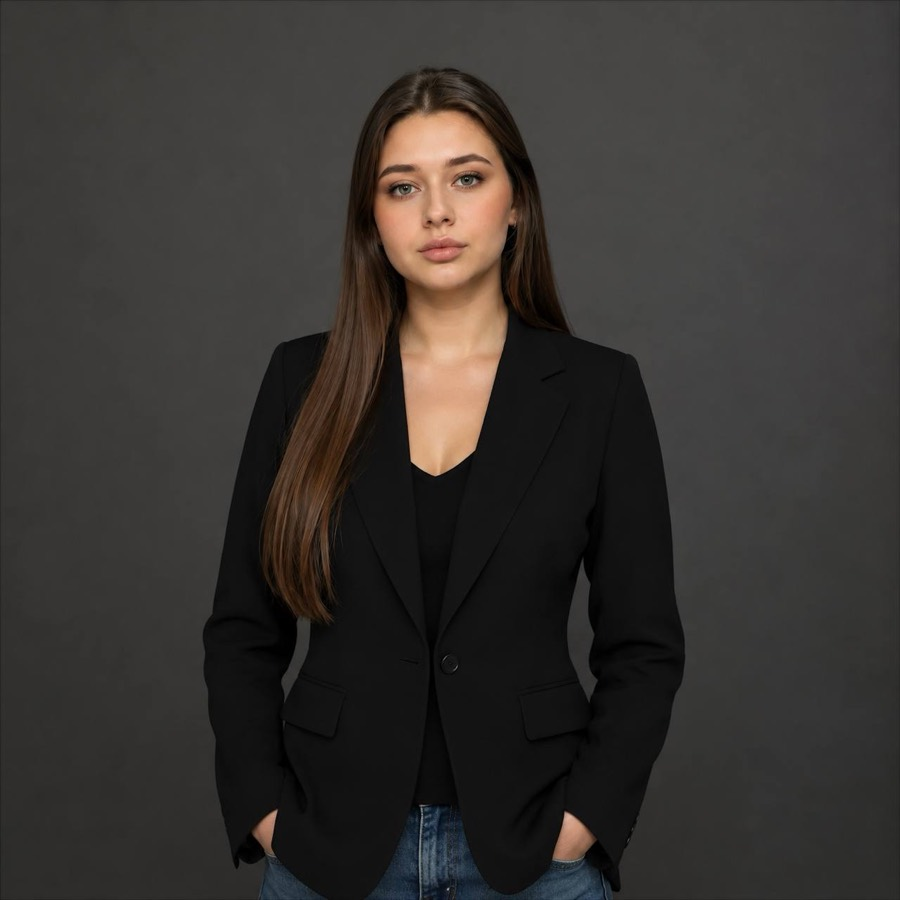
От блонда до тугого завитка и афро. Работает с наращёнными и тонкими волосами.
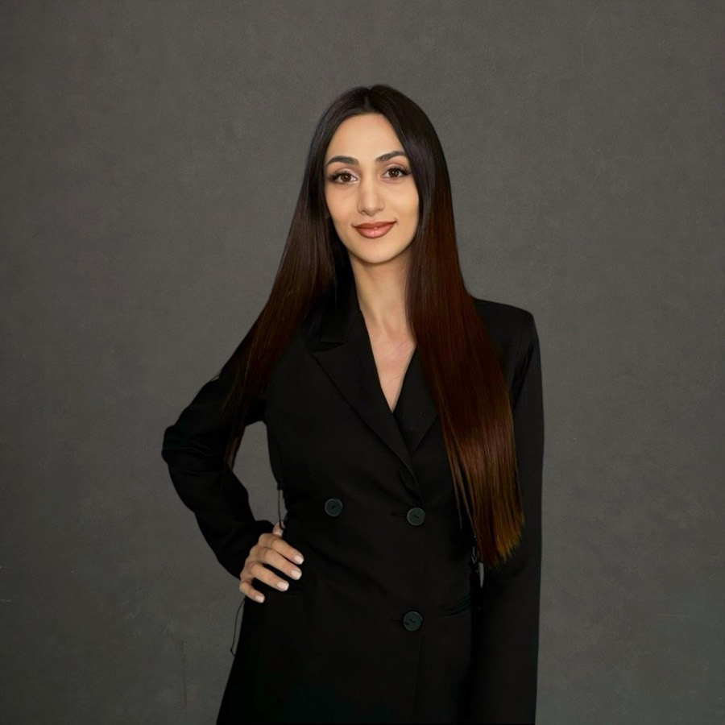
Сложные случаи выпрямления, осветлённые и повреждённые волосы.
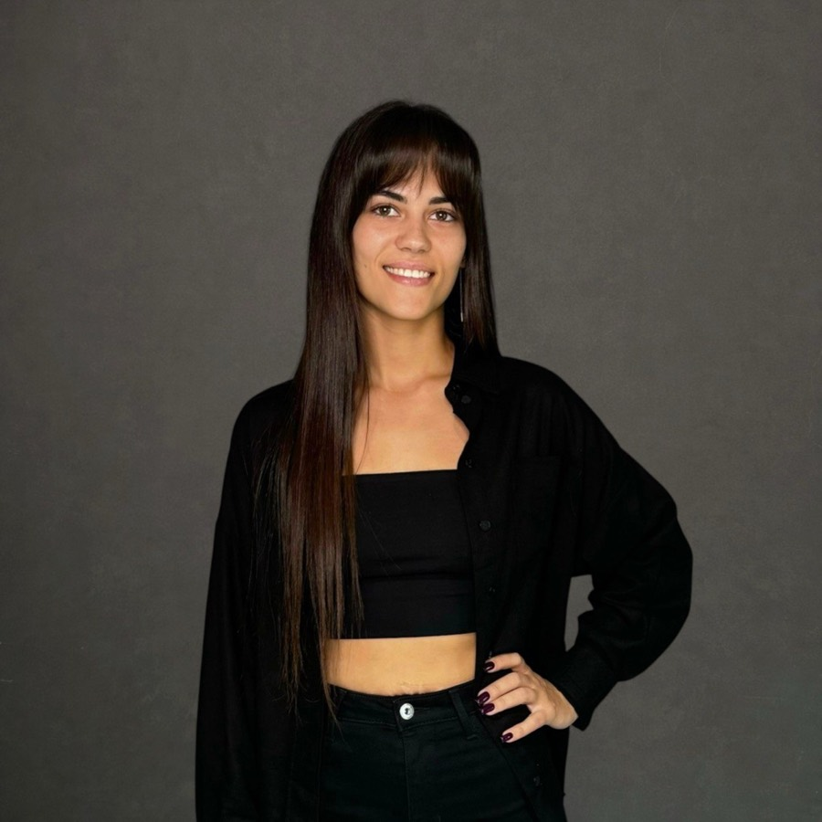
Знает по себе, как отрастить и сохранить длину. Полировка волос.
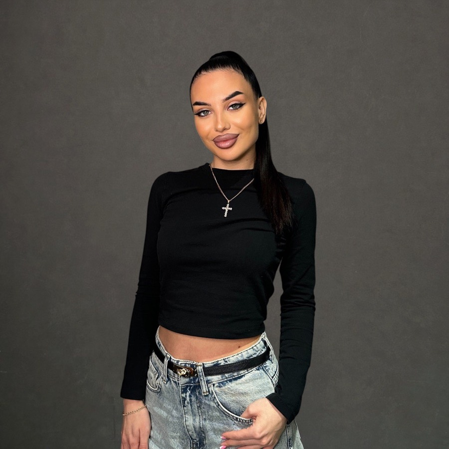
Все техники выпрямления и реконструкции — качественно и быстро.
Скидки не суммируются с другими акциями. Окрашивание вместе с любой процедурой — на 1 000 ₽ дешевле.
| Стрижка / полировка, до 50 см | |
| Стрижка / полировка, свыше 50 см | |
| Пилинг кожи головы |
Цены у мастера; у ТОП-мастера — 2 500 / 3 000 ₽ за полировку.
Не нашли ответ? Напишите нам — ответим на вопросы и поможем с выбором процедуры.
Да. В руках опытного мастера процедура не вредит волосам и дарит гладкость без укладки и утюжка до 6 месяцев.
Нет. Горячие процедуры дают красивый внешний вид и удобство: волосы гладкие после простой сушки феном, даже без расчёски и в любую погоду. Если нужно именно восстановление — это холодные процедуры, без утюжка.
Зависит от желаемого результата и состояния волос. Мастер проведёт диагностику и подберёт процедуру и состав.
Дополнительный уход перед кератином и ботоксом: укрепляет и уплотняет повреждённые волосы и защищает их при нагреве. Наносится перед выпрямлением и прогревается под термошапкой. Нужна осветлённым, окрашенным и повреждённым волосам.
Зависит от процедуры и домашнего ухода. В среднем: кератин — 3–6 месяцев, ботокс — 1–3 месяца, нанопластика — 4–6 месяцев, холодное восстановление — 4–6 недель.
Кератин — не цемент: волосы сохраняют свои свойства, заломы от резинок и после сна — это нормально. Слегка намочите прядь и высушите феном — она снова прямая.
К горячим процедурам: повреждения и заболевания кожи головы, онкологические заболевания, склонность к сильному выпадению волос, астма, аллергические реакции, беременность и грудное вскармливание. Напишите нам — по возможности предложим альтернативу.
Не обязательно. Шампунь подбирается по типу кожи головы.
Ориентир — в калькуляторе выше. В кресле мастер измерит длину и густоту, обсудит пожелания и назовёт полную точную стоимость до начала работы.
На все горячие процедуры — ботокс, кератин, тотальную реконструкцию и нанопластику — 1 месяц. Если появилась волна или пух после сушки, напишите: пригласим в студию и, если недочёт подтвердится, переделаем бесплатно.
Москва, ул. Большая Грузинская, 12. Вход со двора.
м. Баррикадная, Краснопресненская